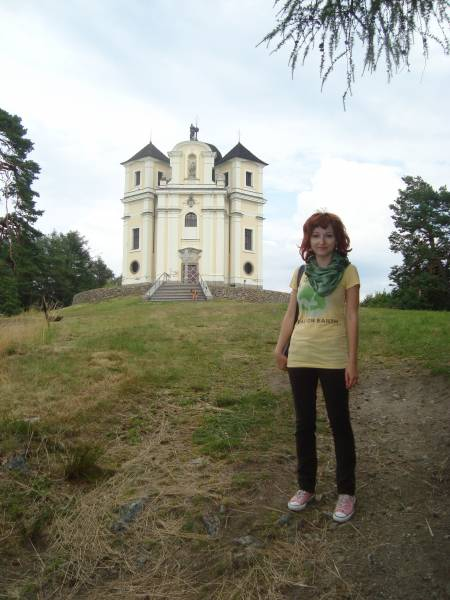
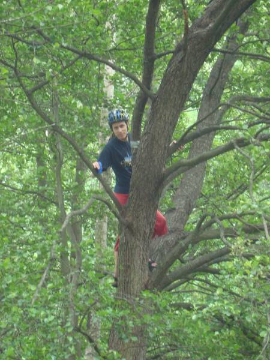
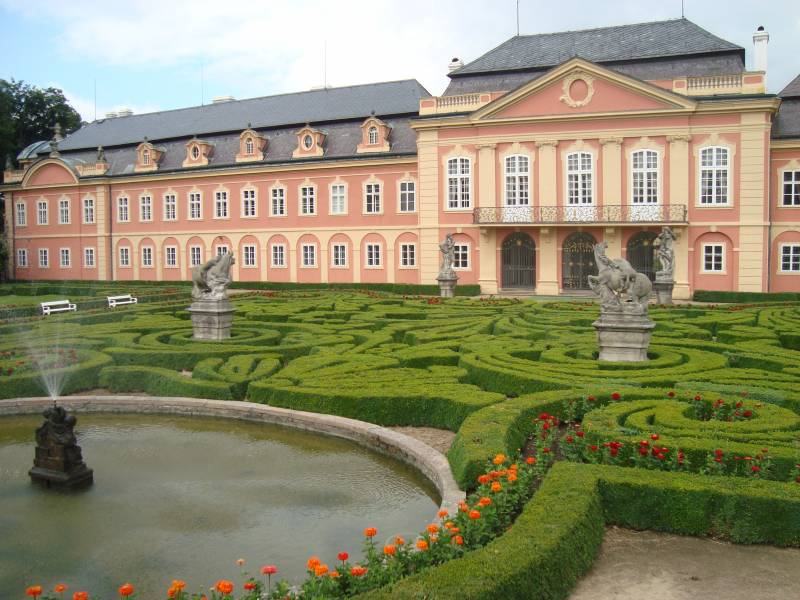
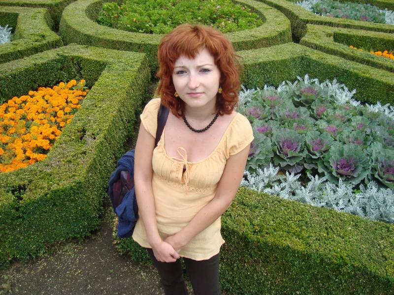
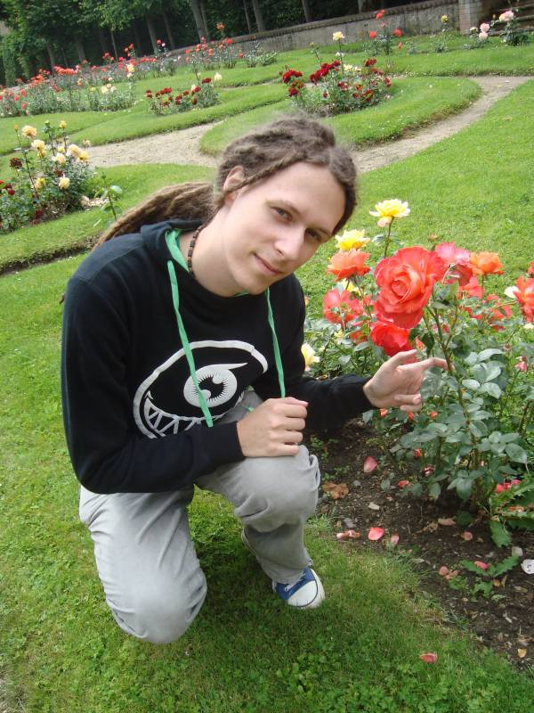
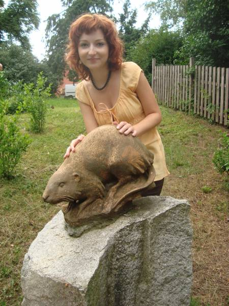

- Přestože nám počasí úplně nepřálo, podnikali jsme po celý týden spoustu výletů - například mě Péťa konečně vzal na dvě významné poutní hory v okolí - Svatou a Makovou, kde jsem měla za úkol najít jeho kešku…a uspěla jsem :-)!

Na Makové hoře
- Nebyla jsem ušetřena ani cyklistiky, takže jsem si - zhýčkaná hanáckou rovinkou - dala pěkně do těla :D!

- Samozřejmě jsme i z Příbrami odjížděli díky všudypřítomnému jídlu těžší o několik kilo :D…

- Z kešování u Pilského rybníka jsme se vrátili s poněkud kuriozní historkou :D…keška byla zrakům okolojdoucích skryta skutečně dokonale…dokonce tak dokonale, že si místo jejího úkrytu (sympatický keříček) vybral nějaký turista k vykonání své potřeby, ehm 8-). Tohoto faktu jsme si bohužel povšimli teprve ve chvíli, kdy jsme na ono inkriminované místo neopatrně položili krabici s keškou :D…Z tohoto příběhu plyne prosté ponaučení: Nosit na geokešing antibakteriální gel je skutečně k nezaplacení :D!

Péťa-stromolezec :)
- Navštívili jsme také Dobříšský zámek a pokochali se jeho krásnou Francouzskou zahradou a majestátním sousoším s fontánou “Napájení Héliových koní”.

Na Dobříši
- Jeden z vůbec nejkrásnějších zážitků jsem si odnesla z památníku Karla Čapka na Strži ve Staré Huti, kde jsme strávili příjemné deštivé poledne a o kterém se tu snad ještě více rozepíšu v jiném příspěvku :-).

Janie a květiny, co vypadají jako hlávky zelí :D
- Na chalupě jsme si zahráli na zahradníky a střihoruké Edwardy a křovinořezem jsme trochu oholili sousedovic křoví zasahující nám do ping-pongového stolu :D…a pak jsme se utkali ve strhujícím souboji :D!

Péťa a růže :-)
- Kešovali jsme jako o život! Péťa se nezalekl dokonce ani lezení po stromech,brodění se v ledové vodě či kešování u tajemného Čertova lože!

- Byla jsem konečně představena Péťovému dědovi, u kterého jsme strávili prima odpoledne. A nabídnul mi tykání :D!

- A abych nezapomněla - našli jsme Ondatru pižmovou :D!!!

A máme tě! :D
Komentáře (2)
Komentáře jsou uzavřené.